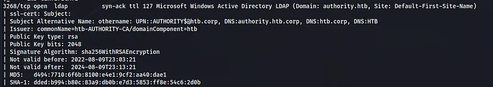

This is my write-up on one of the HackTheBox machines called Authority. Let’s go!
Initial
As usual, let’s start off with an Nmap scan.

A Windows machine and there’s a bunch of ports open, let’s start with SMB enumeration.
smbclient -L \\10.10.11.222
Seems like there are two shares that we can access.
We can connect but seems like we are lacking privilege in the “Department
Shares”. Let’s try the “Development” share.
It appears that Ansible services are running on the target server. Let’s
attempt to download everything and analyze the files and folders on our
server using the following link.
I analyzed the files and folders and discovered Ansible credentials and Tomcat credentials.
Since we now have Tomcat credentials, I assume that there’s a Tomcat
service running, so let’s check for web services. Port 80 is empty. There’s an
HTTPS service on port 8443; let’s try that one.
Okay, it seems like there’s a management system I’m not familiar with. You
can try all sorts of attacks on the site, but so far, nothing has worked. I
noticed that there’s a “pwm” directory on the URL, and I remembered that
during the Ansible file analysis, there’s a PWM directory inside it. Not long
after looking inside the PWM directory, I discovered some password hashes.
Searching for the hash type on hashcat.net
Let’s separate the three hashes into three different files and use ansible2john
Now that we have the Ansible vault password, let’s decrypt it.
Let’s assume the vault password for the PWM login is the same, as the last
two are the same.
Now that we have the credentials set for PWM, let’s try to log in.
I encountered an error when I tried to log in; it said the directory is
unavailable. Let’s investigate further. In the configuration manager menu,
we need a password. We successfully accessed it using the
pwm_admin_password we cracked earlier.
We can download and edit the configuration, or we can edit it directly.
Foothold
If you refer to the previous screenshot, we can download the current
configuration and import a new one. Let’s start by downloading it first to
understand what went wrong previously and how we can address it.
It seems to be attempting to connect with a non-existent service, which is
why it says it can’t find any directory. Let’s try to make the machine connect
to our self-hosted LDAP server. We can use Responder for this purpose, with
the hope of obtaining the hashes or credentials and gaining initial access to the machine.
Edit the configuration and change the LDAP URLs to your Responder server’s
address, following the format from the previous configuration, which is
ldaps://[your_ip]:398. Use port 389 because Responder hosts the LDAP
service on that port, as indicated in netstat.
When I attempted to click the ‘Test LDAP Profile’ button, it didn’t work. I also
tried to test the LDAP connection by logging into the application, but it still
didn’t work. Then I decided to change the URL to ldap://[your_ip]:398,
removing the 's' with the assumption that it was trying to use secure LDAP.
I used the credentials to access the machine with evil-winrm, and it worked!
We are in.
Getting Root
It took me quite some time to find the path to root. Initially, when examining
the privileges, we found that only a limited set of privileges were enabled.
It seems like we have the privilege to add workstations/computers to the
domain, although I’m not sure how to use that privilege.
I also noticed an unusual directory named ‘Certs’ on the ‘C’ root directory.
Inside, there’s a certificate called ‘LDAPs.pfx’
Perhaps we need to work with certificates for privilege escalation. I decided
to upload Certify.exe to investigate.
.\Certify.exe find /vulnerable
As we can see, there’s a vulnerable Certificate Template that we can use to escalate our privileges.
Now we can follow the steps from the article using the new machine account
we added to the machine. First, we need to request a certificate to
impersonate the administrator user.
We have indeed become the administrator. Now, we can either use
ldap_shell to obtain an administrator shell on the machine or simply change
the administrator password. I’ll opt to change the administrator password.
 When I attempted to click the ‘Test LDAP Profile’ button, it didn’t work. I also
tried to test the LDAP connection by logging into the application, but it still
didn’t work. Then I decided to change the URL to ldap://[your_ip]:398,
removing the 's' with the assumption that it was trying to use secure LDAP.
I used the credentials to access the machine with evil-winrm, and it worked!
We are in.
Getting Root
It took me quite some time to find the path to root. Initially, when examining
the privileges, we found that only a limited set of privileges were enabled.
It seems like we have the privilege to add workstations/computers to the
domain, although I’m not sure how to use that privilege.
I also noticed an unusual directory named ‘Certs’ on the ‘C’ root directory.
Inside, there’s a certificate called ‘LDAPs.pfx’
When I attempted to click the ‘Test LDAP Profile’ button, it didn’t work. I also
tried to test the LDAP connection by logging into the application, but it still
didn’t work. Then I decided to change the URL to ldap://[your_ip]:398,
removing the 's' with the assumption that it was trying to use secure LDAP.
I used the credentials to access the machine with evil-winrm, and it worked!
We are in.
Getting Root
It took me quite some time to find the path to root. Initially, when examining
the privileges, we found that only a limited set of privileges were enabled.
It seems like we have the privilege to add workstations/computers to the
domain, although I’m not sure how to use that privilege.
I also noticed an unusual directory named ‘Certs’ on the ‘C’ root directory.
Inside, there’s a certificate called ‘LDAPs.pfx’
 Perhaps we need to work with certificates for privilege escalation. I decided
to upload Certify.exe to investigate.
Perhaps we need to work with certificates for privilege escalation. I decided
to upload Certify.exe to investigate.